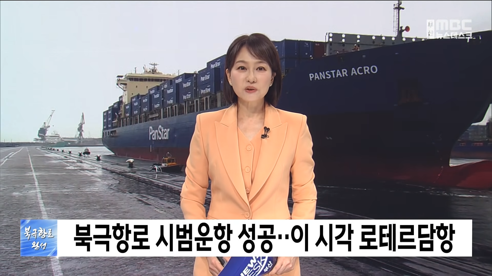
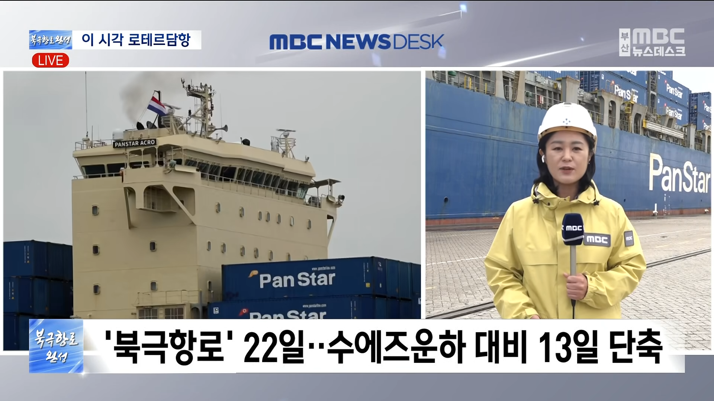
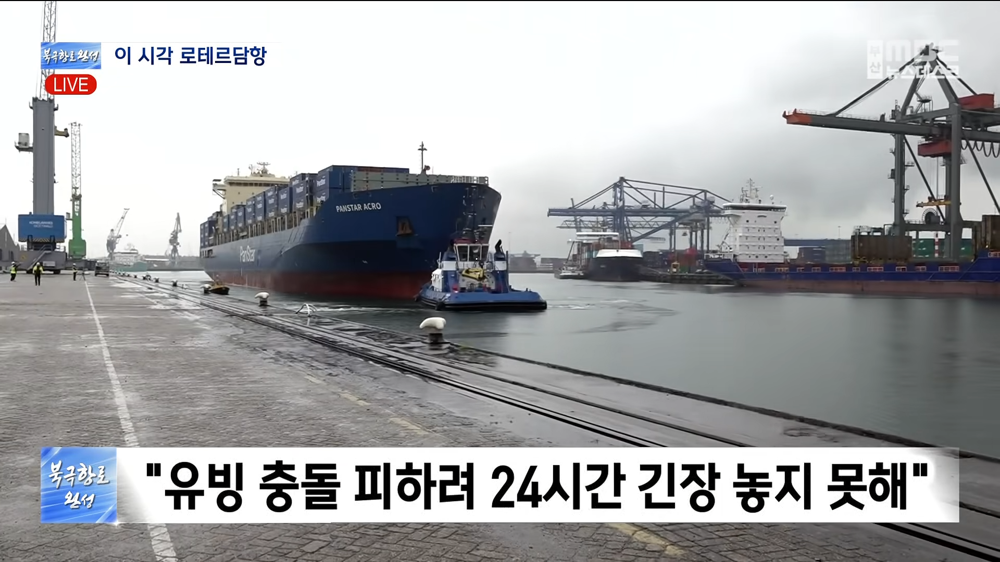
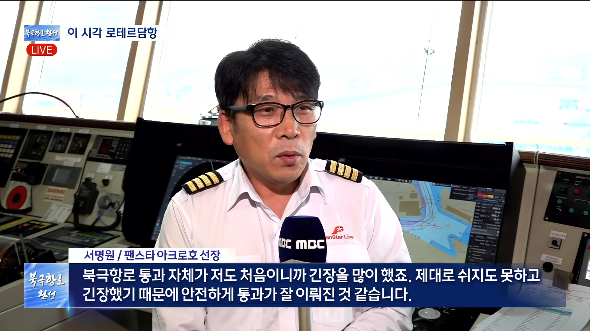
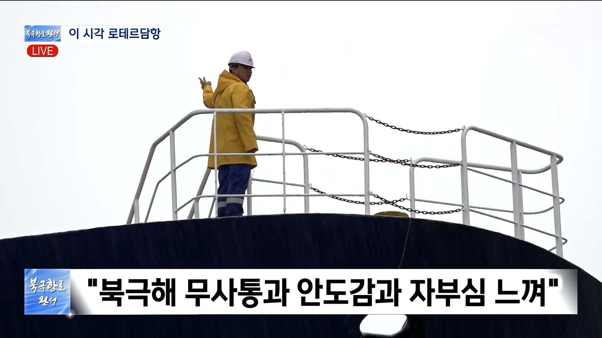
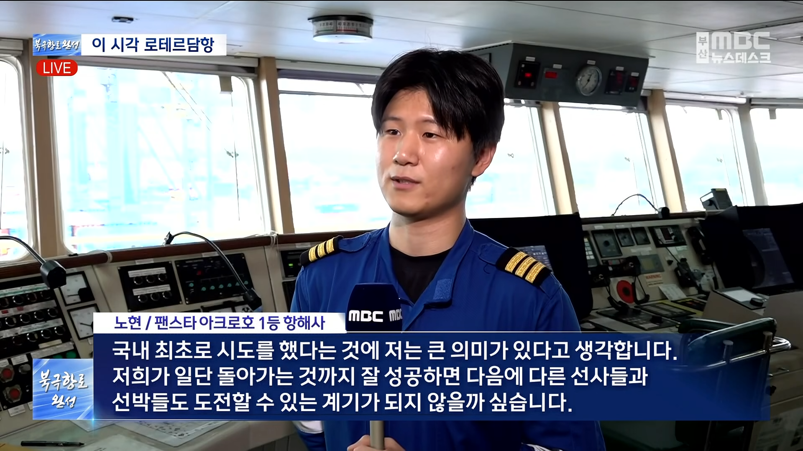
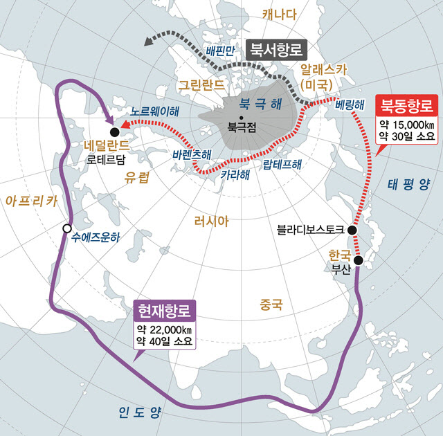

수에즈 경유 해서 로테르담 가는것 보다 북극항로 이용시 10일 단축 예상했는데
시범 운항에서 13일로 땡겨버림 ㅋㅋ







수에즈 경유 해서 로테르담 가는것 보다 북극항로 이용시 10일 단축 예상했는데
시범 운항에서 13일로 땡겨버림 ㅋㅋ
푸틴 싱글벙글 ㅋㅋㅋㅋㅋㅋㅋㅋ
올 초에 로테르담에서 한국으로 이삿짐 받는데 희망봉 찍고 오느라 두달 넘게 걸렸음. 수에즈 운하 근처에 뭔일 생기면 40일이 아니라 4개월도 걸린적 있다더라
어디살다가 온거임?
로테르담이면 일단 네덜란드의 항구
좋긴 한데 러시아 기분 나쁘면 막아버리는 거 아님?
전세계적으로 적이 많은 러시아 입장에선 몇안되는 우호적 국가가 우리나라임 절대 우리한테는 함부로 못함
그렇게 따지면 갈수 있는 바다가 없음
호르무즈 꼬라지 보면 어디나 마찬가지임
기존 항로는 위대한 항로 더만
러시아 비위만 맞추면 되서 오히려 편할듯
로켓 모형이라도 달라는 거 거절하고 진짜 로켓 줬던 사람들임
기분 나쁘면? 북극항로 막고 블라디보스톡에서 북극해 직통항로 뚫어줄 사람들임.
아 그거 루머였다고함 러시아관련된 탱크를 분해해서 우리가 기술을 얻었다는것도
어쨌든 원물 준건 사실
ㅇㅇㅇ맞음
https://www.google.com/search?q=%EB%9F%AC%EC%8B%9C%EC%95%84+%EB%A1%9C%EC%BC%93%EB%AA%A8%ED%98%95+%EC%8B%A4%EC%A0%9C%EB%A1%9C%EC%BC%93&oq=%EB%9F%AC%EC%8B%9C%EC%95%84+%EB%A1%9C%EC%BC%93%EB%AA%A8%ED%98%95+%EC%8B%A4%EC%A0%9C%EB%A1%9C%EC%BC%93&gs_lcrp=EgZjaHJvbWUyBggAEEUYOTIHCAEQIRigATIHCAIQIRigATIHCAMQIRigATIHCAQQIRigATIHCAUQIRigAdIBCDk3NDhqMGo0qAIOsAIB8QVm8x9WvJsv0w&client=ms-android-samsung-ss&sourceid=chrome-mobile&source=chrome.ob&ie=UTF-8#lfId=ChxjMe
지금 당장도 수에즈 안거치고 두배넘게 걸려 희망봉 돌아서 가는경우 많음.
선사들이 바보도 아니고 북극항로에 몰빵해서 그거 아니면 뒤지는 길을 채택할 리가....
러시아가 막을거 무서워서 북극항로 버린다?
구더기 무서워서 장 포기하는거지.
지금 꼬라지 봐선 미국이 베링해협 봉쇄할걸ㅋㅋㅋㅋ
ㅇㅇ 그러니까 선택지가 많아야 함
호르무즈는 봉쇄 또 될 수 있으니까 선택지 늘리는거지
선협 수선 능력 있으면 대륙 쪼개주고 싶더라 너무 돌아가서
북해 영상보면 지옥이 따로없던데 괜찮은거임?
히터틀어서 유빙 다녹여버려잇!!
ㅋㅋㅋㅋㅅㅂ
이거보고 동참하기로 결심했다
비벼지긴하냐???


유럽애들이 안받을거라더만
유빙 한번 들이받으면 타이타닉 되는 리스크가 있어서 보험료가 엄청 높을거야
헐 지구 대륙이 저렇게 생긴거는 처음 알았네
저기 반대편은 걍 대륙 하나도 없는 바다임??
ㅇㅇ 절벽이라 조심해야함
북극항로에 레즈비언을 풀어라
북극곰한테 사과해
기간은 짧지만 위험하고, 갈 수 있는 배도 제한적이고...
근데 위험하잖아 ㅠ
북극항로에 백합커플 100쌍만 투입시키면 해빙 문제 어림도없다 암
팩트는 기존선박으로 갈수있는것도아닐뿐더러
사고났을때 예인문제부터시작해서 한두개가아니고
컨테이너선은 비정기선이아니라 정기선이라서 이항로로 갈 메리트가 1도없다...
이미 수많은 대형해운사들은 북극항로 안쓴다고 못박음ㅋ.
https://biz.chosun.com/industry/company/2025/05/25/BLKLJAVBSNDHXGS5W3VL7XLCOU/
ㅋㅋ
지금 저 컨테이너선도 3000teu급도안되는 컨선이라는거......
탱커나 케미컬정도면 유의미할듯
선박 등급도 내빙 보강하는 정도라 온몸비틀기 회피기동으로 하고 컨테이너도 적게 적재했다카더라공 ㅇㅇ
보험비도 높고 이래저래 계산기 두드리면 남는 거 없긴 하다고 하더라 데이터 쌓으면 또 자산이 될지 모르는 일이긴 할듯
낭만은 일단 합격
아이스클래스등급의 선박만 문제가아니라
저거 사고났을때 오션터그도 아이스클래스여야하는데
오션터그 아이스클래스등급인 선박은 어떻게 해결할것이며
보험료부터 시작해서 지금 해결해야할게 한도끝도없음
사실상 실익이없는걸로 보는게맞음
40년 이후에나 겨우 기존 항로보다 나아진다는 예측이 있더라공
이번 처럼 급변사태 터졌을때 대안정도가 아닐까 뭐것도 아예 안하다 할라치면 힘드니깐 ㅇㅇ
호르무즈 이런 상황엔 스팟 한시적으로 돌려서 물류 지연 정상화시키는거만해도 충분히 의미있지
유빙 무섭
위험한건 알겠는데
쉐빙선까지 아니라도
그 중간정도 단계의 뭔가가 나오지 않을까?
라이다 자율주행도 저기 잘 적용해서
자잘한것들 바다에서도 위험한것들 안부딪히게 다 커버 될 가능성이 높은 시대라서
저거 진짜 사업성 있는것같음
Shaving선이면 눈꽃빙수 만드는 배야?
쇄빙선
리스크가 있을지언정 선택지가 하나 추가된다는건 좋게 보긴 해야지
10일이면 진짜큰거지 시발 방콕갈떄 5시30분~6시간걸리는데 1시간만 줄어도 시발 쥰내 좋을껏같은데
미친거지 10일이면..
저게 허락이 되다니.. 외압쩔거같았는데
미친... 새로운 시대가 열리나?
선장 아재...뭔가 MC몽이랑 비슷하게 생겼네.